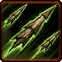
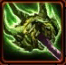

- Stats
- Abilities/Upgrades
- Strategy
- Lore
- Related
Armor: 0
 50/200 | 75/200 with Pathogen Glands 0.5625 per second
50/200 | 75/200 with Pathogen Glands 0.5625 per secondDamage: 0
Attacks: 0
Cooldown: 0
Targets: None
Attack Range: 0
Speed on Creep: 2.925
Speed Burrowed: 2
Speed Burrowed on Creep: 2.6
Acceleration: 1000
Collision Radius: 0.75
Requirements: Level 2 requires Lair, level 3 requires Hive
| Level |  Level 1 |  Level 2 Level 2 |  Level 3 Level 3 |
| Minerals |  100 100 | 150 | 200 |
| Vespene Gas |  100 100 | 150 | 200 |
| Time |  160 160 | 190 | 220 |
| Damage Bonus | 0 | 0 | 0 |
| Total Damage | 0 | 0 | 0 |
100Vespene Cost:
150Supply:
 2
2Produced From: Larva Build Time:
50Requirements: Infestation Pit
Overlord Size: 2
Unit Type: Armored, Biological, Psionic, Ground
Requirements: Level 2 requires Lair, level 3 requires Hive
| Level |  Level 1 Level 1 |  Level 2 Level 2 |  Level 3 Level 3 |
| Minerals | 150 | 225 | 300 |
| Vespene Gas | 150 | 225 | 300 |
| Time | 160 | 190 | 220 |
| Armor Bonus | +1 | +2 | +3 |
| Total Armor | 1 | 2 | 3 |
| Icon | Minerals | Vespene Gas | Research Time | Researched At |
| 0 | 0 | 0 | Already Researched |
Range: 9
Duration:
30s 25Information: This ability allows the Infestor to spit out Infested Terran eggs. The eggs take 5 seconds to gestate, and then an Infested Terran pops out with a 30 second life span. Once 30 seconds is up, the Infested Terrans die.
The eggs have 100 hp, while the Infested Terrans themselves have 50. They receive damage bonuses from Ground Ranged upgrades.
This is the only ability that an Infestor can safely use while burrowed. To use any other spell, they have to un burrow and become vulnerable.
| Icon | Minerals | Vespene Gas | Research Time | Researched At |
| 0 | 0 | 0 | Already Researched |
Range: 9
Radius: 2
Duration:
4sDamage: 30 (40 vs armored) over the duration
75Information: Fungal Growth immobilizes any enemy unit caught in the spell radius, while doing 30 damage to them over the duration. Fungal Growth does 40 damage versus armored units.
Fungal Growth is a great spell for holding enemies in place to help zerglings surround them, or have your roaches catch up. It also helps with defense on ramps or defending broodlords.
With the Pathogen Glands upgrade, an infestor has enough energy upon spawning to use a Fungal Growth.
Fungal Growth also stops other units from transitioning. Abilities that it affects are Siege Mode, Viking Transormation, Burrow, and other abilities that rely on some sort of movement or moving parts.
| Icon | Minerals | Vespene Gas | Research Time | Researched At |
|  | 150 | 150 | 110 | Infestation Pit |
Range: 7 (14 tether)
Duration: 15
100Information: Neural Parasite allows the Infestor to take temporary control over any enemy unit. This can be cancelled at anytime by the Infestor. Otherwise the Infestor will let go after the duration of 15 seconds, if the unit moves out of 14 range, or the Infestor is killed.
Neural Parasite is a very good ability because it not only adds a unit to your army for a while, it also removes it from the enemy.
Neural Paraste is actually very integral to most late game Protoss vs Zerg matches. It is used to try and steal the Mothership from the Protoss player, preventing them from using Vortex on the Zerg army, and instead either wasting it, or splitting up the Protoss army with it.
| Icon | Minerals | Vespene Gas | Research Time | Researched At |
| 150 | 150 | 80 | Infestation Pit |
Information: Pathogen Glands changes the starting energy of Infestors from 50 to 75. This is very useful as this allows Infestors to spawn ready to use a Fungal Growth.
A common timing to look for is the 30 second mark on this research. Since Infestors take 50 seconds to spawn, and Pathogen Glands takes 80 seconds to research, at 30 seconds into the research you can start spawning infestors and they will hatch right as Pathogen Glands finishes.
| Icon | Minerals | Vespene Gas | Research Time | Researched At |
 | 100 | 100 | 100 | Lair |
Cast Time:
~0.5Information: Upon research of burrow, most Zerg units are given the ability. Burrow times vary from unit to unit.
You need a Lair to purchase burrow, but it can be researched at any Zerg production structure (Hatchery, Lair, or Hive).
Burrowed units are invisible unless a detector comes into range or a spell that reveals burrowed units hits them.
Burrow is useful for setting up traps or flanks against opponents without detection
A Zerg player can Burrow to try and save units that would otherwise not make an escape if the opponent does not have detection.
Infestor have the fastest burrow speed of ~0.5. The Average burrow speed of other Zerg units is ~1
When burrowed units move, they shift the dirt around above them. It is difficult to see, like cloaking, but a skilled player can pick it out from their screen. This can alert more skilled players of their locations without actually having detection.
| Icon | Minerals | Vespene Gas | Research Time | Researched At |
 | 0 | 0 | 0 | Comes with Burrow |
Cast Time:
~0.5Information: Unburrow is the second part that comes with the research of Burrow. It allows you to bring Burrowed units back up. Unburrow times vary from unit to unit.
Infestors have the second fastest unburrow speed at ~0.5, right behind the Roach being the fastest. The average unburrow speed of other Zerg units is ~1.
If you have any suggestions for more strategies, go ahead and post on the forums 'here'!
+1 Weapons vs Zerglings
When Zealots have a +1 weapon advantage versus Zerglings, they will kill Zerglings in two attacks instead of three. This makes Zealots very effecient against Zerglings until the zerg catches up in armor upgrades.
Because of this, there are a handful of timing attack that take advantage of the effecient +1 weapon zealots, forcing the zerg to make spines, roaches, or some other unit than zerglings unless the zerg wants to trade inefficiently.
+1 Weapons vs Zerglings
Sum text about how gosu this is
+1 Weapons vs Zerglings
Sum text about how gosu this is
- Overview
Evolved from the borbu matriarch, and in use by the zerg by 2503, infestors are one of the more insidious new additions to the Swarm, supporting hydralisks and roaches on the battlefield. Unlike most zerg strains, infestors have the ability to move while burrowed. They can spew a volatile plague over their targets with dire effects, and they have been known to ingest infested marines, carry them to a combat zone, and regurgitate them to fight for the Swarm.
Perhaps the infestor’s most dangerous feature is the neural parasite, a symbiotic creature living within infestors that, when spat, attaches to an enemy and controls its mind for a short period of time. Seeing the immense potential of this parasite, the Queen of Blades carried out incubation of new strains capable of living longer outside of their host.
Source Information
Text information from the Starcraft Wiki.
Photo 1 created by Saejin Oh. Copyright: UDON Entertainment.
Photo 2 created by Samwise Didier. Copyright: Blizzard Entertainment.
| Zerg |
| Units |
| Hatchery Tech | Drone | Overlord | Queen | Zergling | Baneling | Roach |
| Lair Tech | Overseer | Hydralisk | Mutalisk | Corruptor | Infestor |
| Hive Tech | Ultralisk | Broodlord |
| Spawned Units | Larva | Changeling | Infested Terran | Broodling |
| Structures |
| Hatchery Buildings | Extractor | Spawning Pool | Baneling Nest | Roach Warren | Evolution Chamber |
| Lair Buildings | Hydralisk Den | Spire | Infestation Pit | Nydus Network |
| Hive Buildings | Ultralisk Cavern | Greater Spire |
| Defensive Buildings | Spine Crawler | Spore Crawler | Creep Tumor | Nydus Worm |